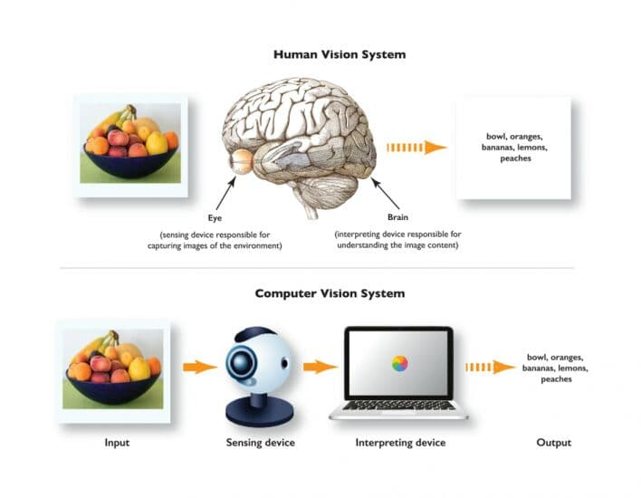

Computer vision is the field of computer science that focuses on creating digital systems that can process, analyze, and make sense of visual data (images or videos) in the same way that humans do. The concept of computer vision is based on teaching computers to process an image at a pixel level and understand it. Technically, machines attempt to retrieve visual information, handle it, and interpret results through special software algorithms.

The origins of computer vision go back to an MIT undergraduate summer project in 1966. It was believed at the time that computer vision could be solved in one summer, but we now have a 50- year old scientific field that is still far from being solved. Early experiments in computer vision took place in the 1950s, using some of the first neural networks to detect the edges of an object and to sort simple objects into categories like circles and squares. In the 1970s, the first commercial use of computer vision interpreted typed or handwritten text using optical character recognition. This advancement was used to interpret written text for the blind. As the internet matured in the 1990s, making large sets of images available online for analysis, facial recognition programs flourished.
These growing data sets helped make it possible for machines to identify specific people in photos and videos.
It is an interdisciplinary scientific field that deals with how computers can be made to gain a highlevel understanding of digital images or videos.
From the perspective of engineering, it seeks to automate tasks that the human visual system can do. Computer vision tasks include methods for
acquiring, processing, analyzing and understanding digital images, and extraction of high-dimensional data from the real world in order to produce
numerical or symbolic information, e.g. in the forms of decisions. Understanding in this context means the transformation of visual images (the input
of the retina) into descriptions of the world that can interface with other thought processes and elicit appropriate action. This image understanding can
be seen as the disentangling of symbolic information from image data using models constructed with the aid of geometry, physics, statistics,
and learning
theory. Another way to define computer vision is through its applications. Computer vision is building algorithms that can understand the content of images
and use it for other applications.
Computer vision technology tends to mimic the way the human brain works. But how does our brain solve visual object recognition?
One of the popular hypothesis states that our brains rely on patterns to decode individual objects. This concept is used to create computer
vision systems.
Computer vision that we use today are based on pattern recognition. We train computers on a massive number of visual
data-computers; acquiring an image, processing an image, understanding the image and find patterns in those images.
The computer vision works in the following articles:-
1. Acquiring an image: Acquire an image from a digital camera either by downloading it with a cable or by using a media card reader. To use
a media card reader, remove the media card from the camera, insert the card into the card reader, and plug the card reader cable into the computer
(typically into a USB or firewire port).
2. Processing the image: is a method to perform some operations on an image, in order to get an enhanced image or to extract some useful information
from it. It is a type of signal processing in which input is an image and output may be image or characteristics or features associated with that image.
Nowadays, image processing is among rapidly growing technologies. It forms core research area within engineering and computer science disciplines too.
3. Understanding the image: Computer vision is a collection of methods for understanding images. If we think of a computer-vision algorithm as a black box,
it takes an image as an input and makes decisions that produce an output, which may aid in facial recognition, microchip-defect detection or the diagnostic
reading of X-ray images.
1. Optical character recognition (OCR): reading handwritten postal codes on letters and automatic number plate recognition(ANPR)
2. Machine inspection: rapid parts inspection for quality assurance using stereo vision with specialized illumination to measure
tolerances on aircraft wings or auto body parts or looking for defects in steel castings using X-ray vision.
3. Retail: object recognition for automated checkout lane.
4. Medical imaging: registering pre-operative and intra-operative imagery or performing long-term studies of people’s brain morphology as they age.
5. Automotive safety: detecting unexpected obstacles such as pedestrians on the street, under conditions where active vision techniques such as radar
or lidar do not work well.
6. Surveillance: monitoring for intruders, analyzing highway traffic and monitoring pools for drowning victims.
7. Fingerprint recognition and biometrics: for automatic access authentication as well as forensic applications.